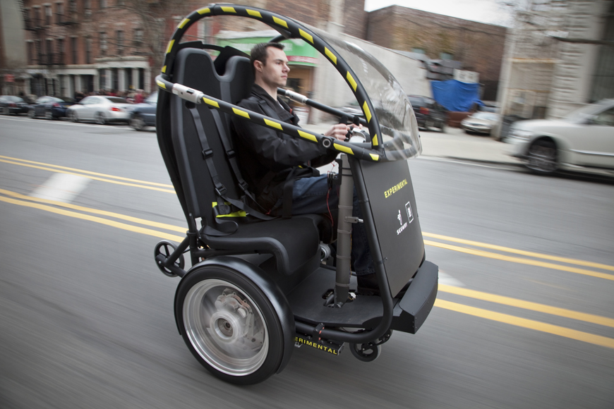

<html>
	<head>
		<link media="all" type="text/css" href="stylesheets/portfolio.css" rel="stylesheet">
		<script type="text/javascript" src="javascripts/softedge.js"></script>
	</head>
</html>
<div style="font-family: Times New Roman;">

<h1>Car-free progress in the urban realm</h1><h4>Andy Likuski</h4><h4>Tufts Department of Urban and Environmental Policy and Planning</h4><h4>UEP-250: Foundations of Public Policy and Planning  </h4><h4>December 11, 2009</h4>
<br>
<a name="introduction"></a></a><b>Introduction</b>
<br>
<br>
<div class="sidenote">
	
	<br>Venice is perhaps the only truly car-free city. Source: http://to-see-before-you-die.com/wp-content/gallery/venice/7-street-life.jpg dgcrc6g5_307db7ctccx_b
	
	<br>J.H. Crawford's <i>Carfree Cities</i> and <i>Carfree Design Manual</i> are two of the very few books addressing car-free cities. Source: http://www.carfree.com/cdm/cdm_cover_480.jpg
</div>
For those of us that believe that car-free urban areas are the only way to achieve a sustainable human habitat, we face the grim reality that car-free places are scarce. Thankfully, the car-free movement is gaining momentum, and car-free urban areas are not only increasing but also beginning to penetrate the consciousness of more urban dwellers and the private and public interests that have the power to create them. The purpose of this project is to track the recent car-free progress in the urban realm. I will explore the state of affairs throughout the world, from car-free activity that began a half-century ago, to places that are just beginning to have periodic car-free events. There are several types of car-free situations that I will explore, including car-free city centers, urban neighborhoods designed to be car-free, and periodic car-free places tied to events. First though, I will preface the discussion with an explanation of the various car-free terminology that defines different degrees of "car-free". At the end of the discussion, I will touch on a few interesting questions concerning car-free momentum: How does one improve car-free zones with car-free paths and mass transit? How can other types of places become car-free, such as less dense urban areas? Lastly, how is the car being stigmatized to promote car-free behavior? I will end by suggesting policy approaches to help accelerate car-free place creation. There is also an appendix about the quality of the material gathered to complete this project and how my personal understanding of the car-free issue has evolved whilst completing the project.
<br>
<br>
For brevity I will avoid dedicated discussion of a couple other ancillary issues. I will not discuss freight delivery issues to car-free areas; this is generally solved by having limited times when trucks can enter a car-free area, or by more innovative means as covered in great detail by J.H. Crawford's <i>Car-free Cities</i>. I also will not discuss counter arguments and pitfalls of car-free places except to mention that the most notable objection derives from merchants worried about losing customers. Their fears have generally proven to be unfounded, whereas the problem of being too successful and having high-rents drive out small merchants is a real concern (Topp and Pharoah 1994, 231-247). In the latter case the obvious solution is to free more retail areas of cars to lower demand.
<br>
<br>
<div class="sidenote"><div style="position:relative;top:-50;">
	
	<br />
	This Google map visualizes all the car-free urban places in the world listed at  <a target="ref" href="http://en.wikipedia.org/wiki/List_of_car-free_places">http://en.wikipedia.org/wiki/List_of_car-free_places</a>. Explore the map as a Google Map at: <a target="map" href="map.htm" style="color:#0000FF;text-align:left">here</a>.
	<br>
	Alternatively, right-click (ctrl-click) to save the following <a href="carfree.kml">file</a> to load a .kml file into Google Earth.
	<br>Each marker contains information from the Wikipedia article.
	</div></div>
In order to aid the reader and broader community in visualizing car-free trends, I have created a visual world map of these places indexed by various characteristics and available as a dynamic map on Google Maps or Google Earth. The map data was programmatically extracted from a list of car-free places on Wikipedia.org (Wikipedia contributors--Carfree 2009).
<br>
<br>
<b>Car-free terminology</b>
<br>
<br>
 <div class="sidenote">
	
	<br>Bollards and auto-blocked streetcar tracks in Montpellier, France. Source: http://farm3.static.flickr.com/2218/2436203715_531c6e58f8.jpg?v=0 dgcrc6g5_307db7ctccx_b
	
	<br>A bollard with an embedded traffic signal that remains red except when cars are permitted into the car-free area. Montpellier, France. Source: http://farm1.static.flickr.com/66/155682467_06f63c98e8.jpg
	
	<br>Third Street Promenade in Santa Monica, California, survives as a successful pedestrian mall. It was built in the 1960s and upscaled in the 1990s. (http://en.wikipedia.org/wiki/Third_Street_Promenade). Source: http://bikeblogs.org/sf/files/2008/12/santa_monica_3rd_street_pedestrian_mall.png
</div>
Car-free areas are generally accepted to be mostly car-free, the exceptions being limited access for commercial deliveries and often car access by residents of car-free downtown commercial centers (Topp and Pharoah 1994, 231-247). In practice this can lead to a combination of enforcement by parking officials and the use of bollards at the entrance to the car-free zone. Car-free areas also permit emergency vehicles and likely disabled access and other special needs, such as time-sensitive deliveries. They are always friendly to mass-transit, particularly streetcars, light rail, and buses. These forms of transit may have a prominent situation, rolling down the main street, or may skirt the periphery of the area. Car-free areas may or may not equate with the pedestrian malls such as those commonly built in the United States in the 1960s and 1970s (<i>ibid</i>), (Moudon 1987). These malls in the United States were meant to mimic successful European downtown shopping areas but largely failed, perhaps because they lacked the holistic European traits of housing mixed with amenities and quality transit. A movement in the 1980s called Livable Streets sought to return the streets to the people through traffic calming and like measures; it was popular in Europe but failed to gain traction in the U.S. (<i>ibid</i>). Yet another phenomenon, private indoor streets, has been billed as trying to bring the suburbs to downtown (Moudon 1987). These "streets" often include atriums to make an indoor space feel outdoors while having complete control of the environment. They are found in downtown centers, high-end malls, and Las Vegas casinos, and have little to do with the car-free city centers. There furthermore exists the concept of traffic-calmed streets, which discourage or slow car-use but do not ban it. The technique can be effective when sufficient obstacles to driving exist, namely insufficient parking, lack of through streets, and dominance by pedestrians and cyclists. All areas that I cover in this paper are permanently or periodically "car-free". Permanent places are usually completely redesigned to remove the typical car traits of asphalt, road paint, traffic lights, and excessive signage. 
<br>
<br>
The way in which a car-free area is described is largely a framing issue. The term car-free connotes a positive experience without a car and encouraging access by "urban compatible" means of travel (Topp and Pharoah 1994, 231-247). Other terms like pedestrian mall and outdoor promenade avoid the non-car connotation, as they are often primarily visited by drivers who park nearby.
<br>
<br>
<b>Car-free downtown areas</b>
<br>
<br>
<div class="sidenote">
	
	<br>A map of York's pedestrian zones (in pink). Source: http://www.york.gov.uk/content/images/portfolio/main/city_centre_ped_map
	
	<br>A pedestrian street in Nuremberg. Source: http://farm4.static.flickr.com/3121/2468331014_692521895a.jpg?v=0
</div>
Formalized interest in the car-free movement has by-in-large occurred in Europe. The European Commission in 1992 formed the "European Club of Car-Free Cities", which attracted initial interest from a hundred cities. (Institute for Sustainable Development 2001), (Topp and Pharoah 1994, 231-247). It furthermore established September 22 as European Car-free Day, which is now celebrated internationally  (Institute for Sustainable Development 2001). General support for car-free areas, particularly urban centers, has been relatively strong in Europe. A survey by the German institution EMNID found that "Car-free centres in the big cities" were favored by 53% overall, by 63% of non-drivers, and by 49% of car drivers (Topp and Pharoah 1994, 231-247). Additionally a German Retailers organization, BAG Nachrichten, unexpectedly found greater retail growth in cities with less provision for the car (<i>ibid</i>). The German cities of Lubeck and Aachen both reported positive retail results in their car-free city centers (<i>ibid</i>). Despite their success, car-free city centers such as York, England and Nuremberg, Germany still comprise only about 1% of the total city (<i>ibid</i>). In other economic terms, car-free cities have been found to be two to five times less costly then the status quo (Mega 2000, 227-236). Europe has also chartered new car-free concepts through local efforts, including a "Car-free Cities?" conference by the Municipality of Amsterdam in 1994 (<i>ibid</i>) and the Lyon Protocol for car-free cities in the "Towards Car-Free Cities" conference in Lyon, France in 1997 (Crawford 1997). 
<br><br>Despite the efforts to put car-free policy on the agenda in Europe, the movement has struggled internationally to find what Cobb and Elder call trigger devices to make car-free policies the solution to the social and environmental justice issues associated with cars (Cobb and Elder 1983). Oil shocks, congestion, and environmental and safety concerns are typically addressed as reasons to improve cars and drive them less often. The car-free lifestyle and car-free city solutions are slowly emerging as alternatives to these incremental improvements.
<br><br>
<div class="sidenote"><div style="position:relative;top:-100px;">
	
	<br>Copenhagen's Str&oslash;get District. Source: http://www.pps.org/general-images/portfolio/slideshow?image_id=6318&on_which_table=public%5fplaces&on_what_id=854&title=Str%f8get%20District&size=xlargeb
</div></div>
<div class="sidenote"><div style="position:relative;top:170px;">
	
	<br>Groningen Grote Markt in the Netherlands. Source: http://www.stevemelia.co.uk/temp/Groningen%20Grote%20Markt%20(central%20square).jpg
</div></div>
Car-free city centers exist throughout the world, and are especially prevalent in older cities that were designed to function without a car. Perhaps the most frequently sited car-free city center in Europe is Copenhagen, Denmark's Str&oslash;get District. It was established at the urging of planner and architect Jan Gehl in 1962, and incrementally expanded as it gained public support (Project for Public Places 2005). Though Gehl argues for incremental change, the initial car-free section was actually "half-disguised" as an extended holiday closure that never reopened (Wikipedia contributors--Gehl 2009). Gehl's success led him to consult the cities of London, Melbourne, and more recently New York and Sydney (<i>ibid</i>). More recently, from 1996 to 1998, Copenhagen has been used as a venue to promote car-free cities (Newman 1998, 299-317). The city has continually reduced parking and added events such as markets and festivals to make the pedestrian streets even more enticing (<i>ibid</i>). As a result "Danes are finding that the public realm of the city is so attractive that there is a declining market for single detached homes on the urban fringe--they are apparently 'too far away' and 'too private'" (<i>ibid</i>). The city of Groningen in The Netherlands similarly has a large car-free city center.
<br><br>
Germany is perhaps the most successful country at implementing pedestrian streets. Pedestrianization began in the thirties in Essen, Germany and continued during reconstruction after World War II (Monheim 2002, 20-21). West and East Germany had about 370 and 120 pedestrian precincts respectively by 1980 (<i>ibid</i>). Germany enjoys an 81% approval rating of pedestrian precincts (<i>ibid</i>).
<br><br>
<div class="sidenote">
	
	<br>November 15 Street in Curitiba, pedestrianized since 1972. Source: http://upload.wikimedia.org/wikipedia/commons/6/63/Rua-XV.jpg
</div>
Another model car-free city center is Curitiba, Brazil, whose city center was pedestrianized by architect turned city mayor Jaime Lerner, who developed a star pattern of metro-style bus lines (today called Bus Rapid Transit) and removed cars from the city center (Wikipedia contributors--Curitiba 2009). Curitiba's innovative transportation system has inspired efforts in other developing countries that face limiting budgets. Most notably, Bogot&aacute;, Columbia has built an impressive network of Bus Rapid Transit and frequently car-free streets that are now voter-approved to become car-free everyday by 2015 (Wright 2001). I will discuss Bogot&aacute;'s Ciclovia in more detail in the section on car-free days below. The Curitiba example and some of the other plans like Str&oslash;get and the Paris plan for the Seine (mentioned below) are examples of car-free plans that are implemented largely by the decree of officials. They evoke Burby's question, "Do broader stakeholder involvement and stronger plans lead to higher rates of implementation of proposals made in plans?" (Burby 2003, 33-50). To be sure, car-free areas require strong plans, but sometimes represent such an unimaginable improvement that it is questionable how much useful feedback the public can give to such a proposal. For this reason, the strategy of car-free events seems prudent to build public awareness prior to exposing them to permanent car-free proposals.
<br><br>
<div class="sidenote">
	
	<br>One of the only pedestrian streets in Qu&eacute;bec City's Vieux Qu&eacute;bec. Source: http://radified.com/gfx/quebec_city.jpg
</div>
Car-free city centers are prospering throughout the world regardless of climate. Oulu, Finland, has a successful pedestrian zone (Mega 2000, 227-236), as does Calgary, Alberta and Qu&eacute;bec City, Qu&eacute;bec in Canada. A mayoral candidate in Montr&eacute;al, Quebec, Canada, Richard Bergeron of Projet Montr&eacute;al is in favor of pedestrianizing the popular Rue Sainte-Catherine and Old Montr&eacute;al's Rue Saint-Paul. (Riga 2009). It is significant to see car-free promises being used as a campaigning tool--it suggests that the candidate believes that both local businesses and citizens identify strongly with the desire for better public space.
<br><br>
<div class="sidenote">
	
	<br>An illustration of downtown Geneva pedestrianized. Source: http://www.tdg.ch/files/imagecache/468x312/story/Strat%C3%A9gie-pi%C3%A9tonisation.jpg
	
	<br>Paris-plage converts the right bank of the Seine from a road to a car-free beach for one month in the summer. Paris' mayor Bertrand Delanoë who introduced the project plans a permanent car-free ban in a larger area along the Seine. Source: http://blog.cleveland.com/world_impact/2009/07/large_Paris-beach.jpg</div>
</div>
Elsewhere throughout the world, car-free city centers are taking hold. Examples abound in France, where the evolving attitude is exemplified by a Le Monde article entitled "La voiture propre ne repr&eacute;sente qu'une petite partie de la solution pour demain" ("The car itself represents only a small part of the solution for tomorrow") (Belot and Lauer 2009). France has car-free centers in Paris (with a sizable extension along the Seine planned (Bremner 2005), Montpellier, and implementations and proposals in many other cities. Switzerland has just decided (December, 2009) to pedestrianize its downtown (Faas 2009). In the South Kensington neighborhood of London a project construction which began in January 2009 will pedestrianize an 800 meter-long street (The Royal Borough of Kensington and Chelsea 2009). Pedestrian streets additionally occur throughout Spain and Latin America, in San Luis Potosi, Mexico (Carbusters.org 2009), on the famous Las Ramblas in Barcelona, and on the Avenida Providencia in Santiago, Chil&eacute; (Project for Public Spaces 2009) There are hundreds of other pedestrianized downtown streets throughout the world, which are viewable on the map mentioned earlier.
<br><br>

There are even positive trends in the United States. Washington, D.C. has recently lowered its building parking requirements to reduce car use (Coalition for Smarter Growth 2009). New York City has created small car-free areas using excess space at intersections, and they have made a significant move by pedestrianizing part of Times Square with the Green Light for Midtown project (Kassel 2009).
<div class="sidenote">
	
	<br>An illustration of the proposed rail line and pedestrian street on 42nd St. in New York. Source: http://graphics8.nytimes.com/images/portfolio/2009/10/13/realestate/commercial/rail600.jpg, Illustrated by Mathieu Delorme.
</div>
More exciting still is a proposal to close off the entire length of 42nd St. to cars and install light rail. The project would provide a valuable cross-town transit link, reducing from bus times by 50%, and increase pedestrian traffic by an estimated 35% (Gregor 2009). Many other cities throughout the United States have small pedestrian streets as well.
<br>
<br>
<b>Car-free residential/mixed use neighborhoods</b>
<br>
<br>
<div class="sidenote">
	
	<br>A housing project, Autofreie Mustersiedlung, in Vienna has 244 apartments for tenants who contractually agree not to own a car. (http://wien.gruene.at/greeningcities/carfree_housing_vienna/). Source: http://wien.gruene.at/uploads/pics/cf1.jpg
</div>
Equally as striking as car-free downtown centers is the recent emergence of car-free residential neighborhoods. The efforts thus far have occurred primarily in Europe and are usually new developments targeting carbon-neutrality or low emissions. A car-free neighborhood in Vienna was studied for its environmental benefits. Compared to a non-car-free development with similar resident demographics, it was found to have 36% versus 9% regular bicycle use, 48% versus 24% holding of an annual transit pass, 55% versus 30% per household zero car use, and 700km versus 10,979km of average car driving per household per year (the car-free neighborhood had car-shares.) (Ornetzeder et al. 2008, 516-530). Other factors, like airplane use, education, and income levels were similar. This data suggests that car-free neighborhoods are a strong impetus for emissions reductions and will therefore receive increasing attention from government and private initiatives. The economic case for car-free housing is also clear. In urban areas like Washington D.C. the cost of underground parking spots can range from $30,000 - $50,000 each. Combine this with a car ownership & operating expenses totaling 17% of the average American budget (Bikes at Work Inc. 2009) and there is a compelling economic case for car-free living.

In planning terms, the concept of explicitly car-free housing was first proposed in Bremen, Germany in 1992 (Sheurer 2008). A report in 1996 showed that approximately 41% of residents in West German cities lived without cars, and %50 in East German cities or the large European cities of Amsterdam, Copenhagen, Edinburgh, and Vienna did so (Sheurer 2008). The study also showed that 75% of such residents in Dortmund, Germany were happy to be car-free (Sheurer 2008). The market for car-free housing in Europe is clearly ripe. Car-free housing has appeared in Cologne, Germany and Vienna, Austria, where residents have agreed by signed documents not to own a car (Monheim 2002, 20-21). Car-free housing was constructed in Amsterdam and Vienna in 1993, in Hamburg and Nuremberg, Germany in the mid-nineties, and in Edinburgh in 1999 (Monheim 2002, 20-21), (Melia 2009). 
<div class="sidenote"><div style="position:relative;top:-100px;">
	
	<br>Car-free neighborhoods in Vauban, Germany. Source: http://www.cooltownstudios.com/images/portfolio/germany-freiburg-vauban.jpg
</div></div>
<div class="sidenote"><div style="position:relative;top:150px;">
	
	<br>The design of GWL-Terrein car-free housing project in Amsterdam Source:http://carfree.free.fr/images/portfolio/gwl-terrein-plan.jpg
</div></div>
Larger projects exist in Vauban, Germany, a fast-growing city with more than 5000 people in a car-free neighborhood (Melia 2009). Britain built its first car-free housing development in Camden in 1998 (London Borough of Camden 2009). More recently Amsterdam has built the 591-unit GWL Terrein just 3km from the city center, leading to a 73% walking and biking commute share over the remaining 17% on public transit (Carfree France 2008).
<br>
<br>
In North America there has been little progress toward car-free housing. Some projects proposals exist, such as a 100-unit proposal in Hayward, California (Selna 2009), but lack of precedence is making the project a hard sell. As I will discuss next though, North America is seeing a surge in car-free events and a budding anti-car mentality.
<br>
<br>
<b>Temporary car-free events</b>
<br>
<br>
<div class="sidenote">	
	
	<br>Ciclov&iacute;a in Bogot&aacute;. Source: http://upload.wikimedia.org/wikipedia/commons/thumb/f/fb/Ciclovia-bogota.jpg/800px-Ciclovia-bogota.jpg
	
	<br>A car-free market in Nice, France, which may become permanent (Remue-m&eacute;naje sur le cours Saleya). Source: http://www.nice.maville.com/photos/2009/12/02/nm_225013_px_501__w_nicematin_.jpg
	
	<br>Sunday Streets in San Francisco. Source: http://www.thebarbarycoastnews.com/media/1/SundayStreets-h.jpg	
</div>
Much of the momentum beyond Europe in the car-free movement can be attributed to car-free days. They were first documented in Switzerland in 1974 and have since been formalized by the aforementioned Car-free Day. They were made into a model event in Reykjavik, Iceland in 1996 and by Bogot&aacute;, Columbia's former mayor Enrique Penalosa, who made history by holding a car-free workday throughout the city on February 24th, 2000 (Badiozamani 2003, 300-303). Car-free events have been especially effective in cities where the majority of residents do not own cars. In Bogot&aacute; only 15% of the population can afford private vehicles (<i>ibid</i>), and in New York City 54% of households do not own cars (78% in Manhatten) (Right of Way 2009). In these places the social and spacial equity problems of cars are far more pronounced. Michael Smith of Right of Way makes the point in New York, exclaiming "it's astounding how much of our municipal resources are dedicated to automobile travel, when car owners are a minority. It's really a theft of public space." (<i>ibid</i>). For transit dependent populations like New York City and especially Bogot&aacute;, the car-free day has several major benefits. First, the bus system (and metro in New York's case) typically has surplus capacity and are able to handle the increase in users on a car-free day. (Badiozamani 2003, 300-303). Additionally, by spending a day getting around without a car, citizens find alternative modes of transit that are more efficient and cost effective, leading some to switch modes permanently (<i>ibid</i>). Most importantly, car-free days give citizens the ability to imagine what could be, to expand their perceptions to a city without cars. It helps them visualize plans for the future, converse about planning in their city, and it gives the government an opportunity to educate and involve citizens in the event at hand and promote a policy shift in planning (<i>ibid</i>). Car-free events are leading to permanent pedestrianization. Bogota, as mentioned earlier, will be car-free by 2015 and San Francisco, California is using the success of their Sunday Streets (car-free streets) to advance the incremental pedestrianization of Market St., its core downtown artery (Office of the Mayor, City & County of San Francisco 2009).
<br>
<br>
<div class="sidenote">
	
	<br>Car-free Day in Jarkarta. Source: http://www.thejakartapost.com/files/images/portfolio/1Ondel2.jpg
	
	<br>Car-free Day in Vancouver. Source: http://www.momentumplanet.com/files/imagecache/article-large/images/portfolio/web-stories/main_7091.jpg
</div>
Not surprisingly, car-free events are materializing world-wide diverse places like Seoul, Korea, Jarkarta and Surabaya, Indonesia, Cape Town, South Africa, Ahmedabad, India, and Brasilia, Brazil  (Badiozamani 2003, 300-303), (BeritaJakarta.com 2009), (Manish 2009). They are growing rapidly in Europe as well; the site European Mobility Week reports a 2009 total of 2181 car-free events in the world with 1667 occurring in Europe (European Mobility Week 2009), (Kanter 2009). More evidence of car-free events can be found on sites about Cicolv&iacute;a ("bike path" in Spanish and used first in this context by the Bogot&aacute; event.) The events range from weekly occurrences to a few days in the summer. In North America Ciclov&iacute;a and similar events occur in Baltimore, New York, San Francisco, Seattle, Portland (Oregon), Montr&eacute;al, Winnipeg, Vancouver, and surely dozens of other cities (Dresser 2009). It even appears to be heading to Los Angeles (Newton 2009). In addition to Bogoa&aacute;, South America has events in Buenos Aires, Argentina and Quito, Ecuador.
<br>
<br>
<div class="sidenote"><div style="position:relative;top:100px;">
	
</div></div>

<div class="sidenote"><div style="position:relative;top:320px;">
	
	<br>Celebrations of Park(ing) Day. Sources: http://farm4.static.flickr.com/3427/3966817864_637bf7ce3a.jpg
</div></div>
Car-free events can exist in other forms as well. Farmer's markets and street fairs have become traditional avenues for closing one or more streets. Ben Fried of Streetsblog.org makes the case for a car-free Halloween in New York City by having a Summer Streets event on that day. This would address the incidence of doubled child pedestrian fatalities during Halloween (Fried 2009). Another innovative event is Park(ing) day, where activists temporarily convert parking places in cities to "parks" in creative ways. This event has occurred worldwide since 2005 (REBAR 2009). These small but significant car-free experiences demonstrate the myriad of superior uses for streets over car dominance and illustrate that devoting space to people is more socially just, useful, and enjoyable.
<br>
<br>
<b>Connecting car-free areas with car-free roads and alternative transit</b>
<br>
<br>
The two most important factors in supporting car-free areas is the presence of great public transit and an abundance of housing in the car-free area. Retrospectively examining the many failed pedestrian malls in the United States, it is clear that much of the failure can be linked to car-dependence and a lack of residences to provide a base-load of pedestrians. The incorporation of residences is essential for true mixed use; it leads to the presence of non-retail business, like grocery stores, start-up businesses, hotels, and laundry mats. That in turn supports a more diverse population and gives the area its own unique quality.
<br>
<br>
<div class="sidenote">
	
	Montpellier's Rue de Maguelone (blue) guides visitors from the train station (bottom) along a car-free street with a tramway to the car-free center. Source: Google Maps
	
	<br>Boston's downtown pedestrian streets (blue) do not connect to busy Park St. Station (left side.) Source: Google Maps	
</div>
The successful European car-free city centers are supported by housing above the store fronts and on adjoining streets. They typically have local transit via buses or streetcar and a train station to serve regional passengers and national or international visitors. The city of Montpellier, France exemplifies these qualities perfectly. The principle streets from the train station to the small medieval courtyards of the city are car-free and served by tramway. Conversely, efforts at pedestrianization in the United States are frequently inadequate, because half-hearted projects fail to connect transit directly to the pedestrian area. Boston, Massachusetts, attempted to reinvigorate its struggling Downtown Crossing retail area by pedestrianizing three streets that connect the landmark Boston Common to other historical landmarks and the business center via the retail streets. However, they failed to connect the city's second busiest subway station, Park St. (at Boston Common), directly to the pedestrian streets, instead concealing the entrance with the busy Tremont St. Such blunders may be academic for commuters, but they likely hurt the tourist and weekend business. 
<br>
<br>
<div class="sidenote"><div style="position:relative; top:50px;">
	
	Segway's prototype P.U.M.A. vehicle may be a valuable addition to a bike or car share program. Source: http://www.segway.com/puma/assets/images/portfolio/mediacenter/med/_MG_5966.jpg
</div></div>
Another emerging tool for strengthening car-free city center are city bike share programs. Bike shares solve the "last-mile" problem around transit stations and thus increase the car-free reach of a car-free city center. Similarly, car-free residential areas take advantage of car share programs for occasional trips that require a car. Car-use in a car-free neighborhood is a useful indicator of where public transport, bike, and walking routes are deficient; ideally car share use will decrease as these deficiencies are solved. Adding electric bicycles, Segways, and other small electric vehicles to bike share programs would reduce car-use by enabling residents to transport heavy items, like groceries and take shelter from bad weather.
<br>
<br>
<b>How to make other places car-free, such as less dense urban areas</b>
<br>
<br>
<div class="sidenote">
	
	Solano Ave. (blue line) in Albany and Berkeley, California, is a successful but highly car-dependent business district. It would benefit greatly from pedestrianization, adding a BART metro station where the track crosses (red, orange lines), and limiting parking to the west end or eliminating it. It should also implement free streetcar service up and down the one mile avenue. Source: Google Maps
	
	Solano Ave. is a walkable one-mile retail street with needless car traffic. Source: http://i.ehow.com/images/portfolio/GlobalPhoto/Articles/5205569/RichmondKensingtonETC.039-main_Full.jpg
</div>
This is the most difficult problem that the car-free movement faces. There are many business areas in city districts, suburbs, and towns that would benefit from being car-free, but they tend to exist around through-roads or intersections. Removing car use from such areas without simply displacing it elsewhere is challenging, and car traffic is more vital to such business areas than in city centers. Like car-free city centers, these areas must reduce their own residents' car use with great transit, street redesign, and car-free paths. Unlike the city center though, which is primarily a destination, they must solve the double-edged sword problem of through-traffic, which brings business but hinders pedestrianization. The only long-term solution likely lies in comprehensive regional planning that creates more metro, inter-city rail, and bike paths to bring in customers on foot or bike. It may be necessary in the interim to identify bypass roads for through traffic while working hard to entice potential car-based visitors with parking at one end of the pedestrianized street, plus free streetcar service if the street length warrants it. Successful pedestrian malls like the Third Street Promenade in Santa Monica, California, may serve as a good model if local transit is free.
<br>
<br>
<b>Anti-car momentum</b>
<br>
<br>
<div class="sidenote"><div style="position:relative;top:50px;">
	
	<br>100 Car-Free Angelinos art exhibit. Source: http://farm3.static.flickr.com/2745/4026103367_09e6dc056c.jpg
</div></div>
<div class="sidenote"><div style="position:relative;top:350px;">
	
	<br>A stop sign in Vancouver, B.C.. Source: http://farm2.static.flickr.com/1406/1437422088_65567a0430_m.jpg
</div></div>
There is plenty of evidence of growing anti-car sentiment in North America and world wide. A novel art exhibit in 2009 entitled 100 Car-Free Angelinos exhibited the lives of a hundred Los Angeles residents who are happy to live car-free (Ju 2009). 2009 articles such as "Is Going Car-free the New Prius?" (Benfield 2009) in the Huffington Post and the New York Times' "For Some, Car-Use is no longer a must have" (Maynard 2009) give the light scent of an attitude change. Anti-car media framing is on the rise as well. A 2009 Huffington Post article entitled "Cars Are Like Cigarettes; The New Pariah" (Modine 2009) and a 2008 BikePortland.org blog is entitled "Cars are the new cigarettes: America's other deadly habit" (Maus 2008). Government officials are also jumping into the act. Berkeley, California's 71-year-old mayor Tom Bates sold his car in 2009 and went car-free (Jones 2009). Both car-free as a new fad and cars as the next cigarette are intriguing examples of media-framing that is taking an alternative view and mainstreaming it. As Ryan notes, it is the perspectives of those in the mainstream media that determines the news story and how it is framed (Ryan 1991). One can only speculate what combination of several factors--alternative media influence like BikePortland.org, the evolving values of the journalists, and the perceptible increase in car-free behavior--is actually mainstreaming the issue.
<br>
<br>
City officials are also putting their names behind car-free proposals, including a monumental proposal to close New York's Central Park to traffic, which dominates the park's Loop Drive (Transportation Alternatives 2009). In addition to Park(ing) day, anti-car protests are on the rise. On June 7, 2008, hundreds of nude protests rode through Mexico City to be "visible" and demand respect from the city's four million vehicles (Quiros 2008). Similarly Critical Mass holds monthly rides in North America and Europe that promote bike use but have an anti-car undercurrent. Given the myriad of angles to attack car usage concerning environment, health, and social justice, and livability, it seems likely that the anti-car movement will strengthen considerably over the next decade. The emergence of modern electric-powered cars may quell some of the environmental protest, but attacks on most fronts will probably intensify.
<br>
<br>
<b>Insights on policy/planning approaches that could be a solution</b>
<br>
<br>
<div class="sidenote">
	A sampling of the 1997 Lyon Protocol for car-free urban areas. Source: http://www.carfree.com/lyon_protocol.htm<br><br>
	<ul><b>Prliminary work</b>
		<li>Define the boundaries of the car-free area</li>
	    <li>Propose circulation changes, including jitneys, bike taxis, etc.</li>
	    <li>Propose traffic management measures for the transition phase</li>
	    <li>Apply car-free design principles</li>
	    <li>Develop freight handling measures</li>
	    <li>Plan to accommodate through traffic</li>
	    <li>Develop preliminary phasing proposals</li>
	</ul>
	<ul><b>Initial measures:</b>
	    <li>Reduce speed limits for motorized vehicles (enforced by speed restriction bumps)</li>
	    <li>Improve public transport, pedestrian, and bicycle infrastructures</li>
	    <li>Implement parking restrictions</li>
	    <li>Impose right-of-way restrictions on cars</li>
	    <li>Implement traffic cells to discourage cross-city travel</li>
	    <li>Require car owners to buy public transport passes</li>
	</ul>
	<ul><b>Phases, remove:</b>
		<li>Private cars of non-residents</li>
	    <li>Private cars of residents</li>
	    <li>Buses (once the passenger rail system is operational)</li>
	    <li>Most trucks (using freight consolidation to increase efficiency and reduce environmental impacts)</li>
	    <li>All vehicles except emergency services and slow-speed local delivery vehicles (once the rail freight system is operational)</li>
	</ul>
</div>
The car-free progress that I have described suggests some basic policy and planning approaches to increase car-free areas. The most fundamental policy shift needed is to remove the inherent rights of automobiles to public spaces. Parking requirements for buildings must be removed, and cars should be strictly limited to a speed of 15 miles per hour in any area with pedestrians to discourage their use and decrease their danger. Critical pedestrian densities on a street should legally bind pedestrianization of the street for safety and social equity purposes. Similarly public transit should be legally mandated for any neighborhood with a minimum density of people, and it should be legally obliged to upgrade to higher quality service, such as bus rapid transit, metro, or light-rail, when a neighborhood meets a certain population density requirement. The exact criteria should be modeled from similar areas throughout the world that have excellent transit coverage. The transit's quality should be legally tied to speed, frequency, and reliability. Bike sharing, transit, and other car-free services should be subsidized by steadily increasing driving fees with congestion charges like London or an overall price per kilometer driven, which the Netherlands has implemented nationwide. All pedestrian areas should be mixed-use to increase the area's uniqueness and to make them safe all day and night. All new developments, whether urban or suburban, should be required by the metropolitan or regional authority to be car-free. Finally, any land-use rights associated with automobiles should be withdrawn in order to remove private parking lots and driveways in pedestrian-heavy areas. For efficiency, cities and regional authorities should adopt a protocol similar to the Lyon protocol, shown to the right. Moreover, economic calculations that drive policy need to take the full cost of driving into account, which is estimated at $5.60 to $15.14 per gallon in 1998 dollars (Kimbrel 1998). Taxing at the lower end alone would be enough to begin a car-free avalanche in North America.
<br>
<br>
<b>Appendix</b>
<br>
<br>
<i>Assessment of the quality of the materials</i><br>
There is plentiful information in the news about the car-free movement. Resources specific to certain projects can be hard to ascertain, specifically non-textual information such as car-free maps. City web sites tend to promote businesses on their maps while forgetting to highlight the car-free streets. There is somewhat of a dearth of academic writing about car-free areas and certainly the car-free movement. I suspect that this will grow significantly in the next decade as a younger generation enters academia and shifts away from writing about older topics like congestion management and new urbanism. There is also a plentitude of non-academic reports and documents from political and environmental organizations.
<br>
<br>
<i>My evolving understanding of the car-free domain</i><br>
I took an initial interest in car-free development about five years ago and have studied it with increasing intensity since then. The process of assembling this project made me aware of more car-free projects and some innovative ideas. Little has changed since beginning my research a few months ago. The momentum for car-free areas has probably been dampened by the global recession and will benefit from the economic recovery. Of course, a period of recession and stimulus spending is the best time to promote fundamental change.
<br>
<br>  
<b>References</b>
<br>
<br>
<p class="bibliography">Badiozamani, G. 2003. Car-free days: A shift in the planning paradigm? Paper presented at  Natural resources forum, .
</p><p class="bibliography">Belot, Laure, and Lauer, Stéphane. "La voiture propre ne représente qu'une petite partie de la solution pour demain". in Le Monde. 2009 [cited 12/5/2009 2009]. Available from <a href="http://www.lemonde.fr/societe/article/2009/11/18/la-voiture-propre-ne-represente-qu-une-petite-partie-de-la-solution-pour-demain_1268964_3224.html" target="_blank">http://www.lemonde.fr/societe/article/2009/11/18/la-voiture-propre-ne-represente-qu-une-petite-partie-de-la-solution-pour-demain_1268964_3224.html</a> (accessed 12/5/2009).
</p><p class="bibliography">Benfield, F. Kaid. 2009. Is going car-free the new prius? <i>Huffington Post</i>, October 26, 2009, 2009, sec 2009 (accessed 12/5/2009).
</p><p class="bibliography">BeritaJakarta.com. 2009. Next week, west jarkata to hold car free day. <i>BeritaJakarta.com</i>, November 9, 2009, 2009, sec 2009 (accessed 12/5/2009).
</p><p class="bibliography">Bikes at Work Inc. The real costs of car ownership calculator. in Bikes at Work Inc.. [cited 12/5/2009 2009]. Available from <a href="http://www.bikesatwork.com/carfree/cost-of-car-ownership.html" target="_blank">http://www.bikesatwork.com/carfree/cost-of-car-ownership.html</a> (accessed 12/5/2009).
</p><p class="bibliography">Bremner, Charles. Paris bans cars to make way for central pedestrian zone - times online. in Times Online. 2005 [cited 12/5/2009 2009]. Available from <a href="http://www.timesonline.co.uk/tol/news/world/article427778.ece" target="_blank">http://www.timesonline.co.uk/tol/news/world/article427778.ece</a> (accessed 12/5/2009).
</p><p class="bibliography">Burby, R. J. 2003. Making plans that matter: Citizen involvement and government action. <i>Journal of the American Planning Association</i> 69, (1): 33-50.
</p><p class="bibliography">Carbusters.org. 2009. San Luis Potosi: Paving the way for carfree conversions in Mexico. <i>Carbuster's Editorial RSS Feed</i> (Wed, 18 Nov), <a href="http://carbusters.org" target="_blank">http://carbusters.org</a>.
</p><p class="bibliography">Carfree France. GWL terrein: Un quartier sans voitures à amsterdam. 2008 [cited 12/5/2009 2009]. Available from <a href="http://carfree.free.fr/index.php/2008/02/28/gwl-terrein-un-quartier-sans-voitures-a-amsterdam/" target="_blank">http://carfree.free.fr/index.php/2008/02/28/gwl-terrein-un-quartier-sans-voitures-a-amsterdam/</a> (accessed 12/5/2009).
</p><p class="bibliography">Coalition for Smarter Growth. 2009. <i>Leave the 1950s behind! the case for eliminating minimum parking requirements. </i>Coalition for Smarter Growth, .
</p><p class="bibliography">Cobb, R. W., and C. D. Elder. 1983. <i>Participation in american politics: The dynamics of agenda-building</i> Johns Hopkins University Press, Baltimore.
</p><p class="bibliography">Crawford, J. H. The lyon protocol. 1997Available from <a href="http://www.carfree.com/lyon_protocol.htm" target="_blank">http://www.carfree.com/lyon_protocol.htm</a>.
</p><p class="bibliography">Dresser, Michael. 2009. Autumn stroller traffic. <i>Baltimore Sun</i>, October 26, 2009, 2009, sec 2009 (accessed 12/9/2009).
</p><p class="bibliography">European Mobility Week. Participating cities and towns. 2009Available from <a href="http://www.mobilityweek.eu/cities/participants_en.php?page=article" target="_blank">http://www.mobilityweek.eu/cities/participants_en.php?page=article</a>.
</p><p class="bibliography">Faas, J&eacute;r&ocirc;me. La ville d&eacute;cide de rendre son centre pi&eacute;ton. in Tribune de Gen&egrave;ve. 2009 [cited 12/5/2009 2009]. Available from <a href="http://www.tdg.ch/geneve/actu/ville-decide-rendre-centre-pieton-2009-12-01" target="_blank">http://www.tdg.ch/geneve/actu/ville-decide-rendre-centre-pieton-2009-12-01</a> (accessed 12/5/2009).
</p><p class="bibliography">Fried, Ben. 2009. <i>The case for a car-free halloween</i>. Streetsblog new york city. <a href="http://www.streetsblog.org/2009/11/16/the-case-for-a-car-free-halloween/comment-page-1/" target="_blank">http://www.streetsblog.org/2009/11/16/the-case-for-a-car-free-halloween/comment-page-1/</a> ed. Vol. 2009Streetsblog New York City (accessed 12/5/2009).
</p><p class="bibliography">Gregor, Alison. 2009. Without cars, a different sort of 42nd st. <i>NYT &gt; Commercial</i> (Wed, 14 Oct), <a href="http://www.nytimes.com/pages/realestate/commercial/index.html?partner=rss" target="_blank">http://www.nytimes.com/pages/realestate/commercial/index.html?partner=rss</a>.
</p><p class="bibliography">Institute for Sustainable Development. 2001. <i>A commentary by polish environmental organisations on poland's negotiation position on the european union membership of the republic of poland. </i> Institute for Sustainable Development.
</p><p class="bibliography">Jones, Carolyn. 2009. Berkeley mayor gives up his car for the bus. <i>San Francisco Chronicle</i>, April 20, 2009, 2009, sec 2009 (accessed 12/5/2009).
</p><p class="bibliography">Ju, Siel. 100 car-free angelenos. <i>MNN - mother nature network</i>. 2009 [cited 12/11/2009 2009]. Available from <a href="http://www.mnn.com/lifestyle/ecollywood/blogs/100-car-free-angelenos" target="_blank">http://www.mnn.com/lifestyle/ecollywood/blogs/100-car-free-angelenos</a> (accessed 12/11/2009).
</p><p class="bibliography">Kanter, James. 2009. <i>Car-free days in europe, mostly</i>. <a href="http://greeninc.blogs.nytimes.com/2009/09/21/car-free-days-in-europe-mostly/" target="_blank">http://greeninc.blogs.nytimes.com/2009/09/21/car-free-days-in-europe-mostly/</a> ed. Vol. 2009Nytimes.com (accessed 12/5/2009).
</p><p class="bibliography">Kassel, Rich. 2009. Moving the city along the road to sustainability. <i>Gotham Gazette</i>, October, 2009, 2009 (accessed 12/5/2009).
</p><p class="bibliography">Kimbrel, Andrew et al. 1998. <i>The real price of gasoline (report no. 3 an analysis of the hidden costs that consumers pay to fuel their automobiles). </i> International Center for Technology Assessment, 3.
</p><p class="bibliography">London Borough of Camden. <i>Car free residential areas. </i>
</p><p class="bibliography">Manish, Kumar. 2009. Have a BRTS for walled city: Penalosa. <i>The Times of India</i>, November 15, 2009, 2009, sec 2009 (accessed 12/5/2009).
</p><p class="bibliography">Maus, Jonathan. 2008. <i>Cars are the new cigarettes; america's other deadly habit</i>.  BikePortland.org., <a href="http://bikeportland.org/2008/10/22/cars-smoking-and-americas-deadly-habit/" target="_blank">http://bikeportland.org/2008/10/22/cars-smoking-and-americas-deadly-habit/</a>.
</p><p class="bibliography">Maynard, Micheline. 2009. For some, the car is no longer a must-have. <i>New York Times</i>, October 21, 2009, 2009 (accessed 12/5/2009).
</p><p class="bibliography">Mega, Voula. 2000. Cities inventing the civilisation of sustainability: An odyssey in the urban archipelago of the european union. <i>Cities</i> 17, (3) (6): 227-36.
</p><p class="bibliography">Melia, Steve. Car-free cities: An idea with legs. in guardian.co.uk. 2009 [cited 12/5/2009 2009]. Available from <a href="http://www.guardian.co.uk/environment/green-living-blog/2009/oct/29/car-free-cities-neighbourhoods" target="_blank">http://www.guardian.co.uk/environment/green-living-blog/2009/oct/29/car-free-cities-neighbourhoods</a> (accessed 12/5/2009).
</p><p class="bibliography">Modine, Matthew. 2009. Cars are like cigarettes; the new pariah. <i>Huffington Post</i>, May 26, 2009, 2009, sec 2009 (accessed 12/5/2009).
</p><p class="bibliography">Monheim, R. 2002. The role of pedestrian precincts in the evolution of german city centres from shopping to urban entertainment centres. Paper presented at  Australia-Walking the 21rst century conference, Perth WA, .
</p><p class="bibliography">Moudon, A. V. 1987. <i>Public streets for public use</i> Van Nostrand Reinhold.
</p><p class="bibliography">Newman, P. 1998. From symbolic gesture to the mainstream: Next steps in local urban sustainability. <i>Local Environment</i> 3, (3): 299-317.
</p><p class="bibliography">Newton, Damien. 2009. <i>Will L.A. have its ciclovia? signs are pointing to yes</i>. <a href="http://la.streetsblog.org/2009/11/10/will-l-a-have-its-ciclovia-signs-are-pointing-to-yes/" target="_blank">http://la.streetsblog.org/2009/11/10/will-l-a-have-its-ciclovia-signs-are-pointing-to-yes/</a> ed. Vol. 2009Streetsblog Los Angeles (accessed 12/5/2009).
</p><p class="bibliography">Office of the Mayor, City &amp; County of San Francisco. Mayor newsom and community leaders look forward to beginning <br>of better market street transportation pilot project on tuesday, <br>september 29. in Office of the Mayor, City &amp; County of San Francisco. 2009Available from <a href="http://marketstreet.sfplanning.org/images/portfolio/09_25_09_Market_St_Pilot_Press_Release.pdf" target="_blank">http://marketstreet.sfplanning.org/images/portfolio/09_25_09_Market_St_Pilot_Press_Release.pdf</a>.
</p><p class="bibliography">Ornetzeder, M., E. G. Hertwich, K. Hubacek, K. Korytarova, and W. Haas. 2008. The environmental effect of car-free housing: A case in vienna. <i>Ecological Economics</i> 65, (3): 516-30.
</p><p class="bibliography">Project for Public Places. Str&oslash;get district - great public places. in Project for Public Places. 2005Available from <a href="http://www.pps.org/great_public_spaces/one?public_place_id=854" target="_blank">http://www.pps.org/great_public_spaces/one?public_place_id=854</a>.
</p><p class="bibliography">Project for Public Spaces. Going places. in Project for Public Spaces. [cited 12/5/2009 2009]. Available from <a href="http://www.pps.org/transportation/info/trans_articles/great_transportation_places" target="_blank">http://www.pps.org/transportation/info/trans_articles/great_transportation_places</a> (accessed 12/5/2009).
</p><p class="bibliography">Quiros, Eduardo. Mexico city cyclists ride nude in anti-car protest. in Reuters AlertNet. 2008 [cited 12/5/2009 2009]. Available from <a href="http://www.alertnet.org/thenews/newsdesk/N07401357.htm" target="_blank">http://www.alertnet.org/thenews/newsdesk/N07401357.htm</a> (accessed 12/5/2009).
</p><p class="bibliography">Riga, Andy. Bergeron calls for car-free ste. catherine st. in The Gazette. 2009 [cited 12/5/2009 2009]. Available from <a href="http://www.montrealgazette.com/opinion/letters/Bergeron+calls+free+Catherine/2143575/story.html" target="_blank">http://www.montrealgazette.com/opinion/letters/Bergeron+calls+free+Catherine/2143575/story.html</a> (accessed 12/5/2009).
</p><p class="bibliography">Right of Way. 2009. New york still mostly car-free. [cited 12/5/2009 2009]. Available from <a href="http://www.rightofway.org/research/censusrelease.html" target="_blank">http://www.rightofway.org/research/censusrelease.html</a> (accessed 12/5/2009).
</p><p class="bibliography">Ryan, C. 1991. <i>Prime time activism: Media strategies for grassroots organizing</i>. South End Pr.
</p><p class="bibliography">Selna, Robert. 2009. 1,000 units, near car-free, planned in hayward. <i>San Francisco Chronicle</i>, June 9, 2009, 2009, sec 2009 (accessed 12/5/2009).
</p><p class="bibliography">Sheurer, Jan. Car-free housing in european cities. A survey of sustainable residential development projects. 2008 [cited 12/5/2009 2009]. Available from <a href="http://www.istp.murdoch.edu.au/ISTP/publications/jscheurer/carfree/carfree.html#CFHsholds" target="_blank">http://www.istp.murdoch.edu.au/ISTP/publications/jscheurer/carfree/carfree.html#CFHsholds</a> (accessed 12/5/2009).
</p><p class="bibliography">The Royal Borough of Kensington and Chelsea. Exhibition road | street design. in The Royal Borough of Kensington and Chelsea. [cited 12/5/2009 2009]. Available from <a href="http://www.rbkc.gov.uk/exhibitionroad/street.html" target="_blank">http://www.rbkc.gov.uk/exhibitionroad/street.html</a> (accessed 12/5/2009).
</p><p class="bibliography">Topp, Hartmut, and Tim Pharoah. 1994. Car-free city centres. <i>Transportation</i> 21, (3) (08/01/): 231-47.
</p><p class="bibliography">Transportation Alternatives. Officials and organizations supporting a car-free central park. in Transportation Alternatives. 2009 [cited 12/5/2009 2009]. Available from <a href="http://www.transalt.org/campaigns/cpark/supporters" target="_blank">http://www.transalt.org/campaigns/cpark/supporters</a> (accessed 12/5/2009).
</p><p class="bibliography">Vande Walle, S., T. E. E. Steenberghen, N. Paulley, A. Pedler, and M. Martens. 2004. The role of indicators in the assessment of integrated land-use and transport policies in european cities. <i>International Planning Studies</i> 9, (2-3): 173-96.
</p><p class="bibliography">Wikipedia contributors. Ciclov&iacute;a. in Wikimedia Foundation. 2009.
</p><p class="bibliography">Wikipedia contributors. Curitiba in Wikipedia, The Free Encyclopedia. 2009. 
</p><p class="bibliography">Wikipedia contributors. Jan gehl in Wikipedia, The Free Encyclopedia. 2009. 
</p><p class="bibliography">Wikipedia contributors. List of car-free places. in Wikipedia, The Free Encyclopedia. 2009. 
</p><p class="bibliography">Wikipedia contributors. Str&oslash;get in Wikipedia, The Free Encyclopedia. 2009. 
</p><p class="bibliography">Wright, L. 2001. <i>Latin american busways: Moving people rather than cars. </i> Institute for Transportation &amp; Development Policy, .
</p><p class="bibliography">

</p>